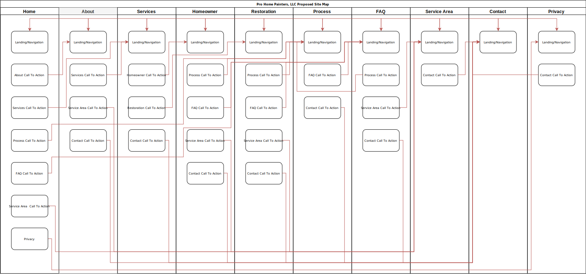

Client & Topic
Pro Home Painters, LLC is a fictional Eastern Connecticut based professional painting company. They specialize in exterior and interior home painting but also do colonial restorations, cabinetry and staining. Pro Home Painters prides themselves in for their unique and challenging projects and 98% customer satisfaction rate.
Development Process and Engagement
The Pro Home Painters website is for a fictional client. The client will be involved with the development process by attending the meet and greet meeting where the company goals, desires, and current brand strategy will be discussed. At this initial meeting, my processes and procedures will be explained. There will be two other physical meetings, the first is the marketing meeting where sales funnels and the brands' social media strategies will be discussed. The second is the review and acceptance meeting where the final website will be reviewed and either accepted with changes or a follow-up meeting is scheduled. All other branding, website designs, and website reviews will be conducted via web teleconference and Adobe XD design review tools.
Testing
There are two types of tests that will be conducted, code testing while the website is in development and user validation testing (Quality Assurance). The code testing is referred to as test-driven development and any code not written in HTML or CSS will leverage advanced Test Driven Development (TDD) strategies where appropriate. The user validation testing is a form of quality assurance where a developer/user will physically navigate the website ensuring all specified requirements as identified in the development process or engagement meetings. All additions, amendments or removal of requirements will be documented and agreed upon by all parties.
The following browsers will be used for user validation testing:
- Chrome (latest stable on Linux at time of testing)
- Firefox (latest stable on Linux at time of testing)
- Edge (latest stable on Windows 10 at time of testing)
Description
Pro Home Painters is owned and operated by a sole business owner who provides painting services for Southeastern Connecticut. The goals of the business are to expand the customer base into western Rhode Island and increase the revenue by 20% at the end of quarter one, 2020.
The purpose of the website is to showcase the businesses best work, showcase reviews, provide sales funnels via contact forms and point to the businesses social media platforms.
Audience
There are two identified target audiences: homeowners and restorations
Home Owners
- Middle to upper-class economic status
- Mid 30's and seniors
- Expendable funds for necessary and unnecessary home maintenance
- Heavy mobile device website access
- Moderate desktop access (senior demographic)
- Likely female demographic
Restorations
- Colonial contractors (business to business)
- Heavy mobile device access
- Contracting industry is primarily male
- Cares about prior workmanship
- Lead paint certifications important
The identification of the target audience is critical to design a website that keeps the audience engaged in the website content. The identification of two different audience types will help define the types of imagery and colors that will be used throughout the website. The overlap of both audiences appears to be the imagery so it will likely be the primary focus.
The logo and brand colors will be designed and generated by me but I will source copyright free imagery from unsplash.com. I will also provide all website text content. The websites typed content won't need updating often but it is critical the imagery is updated as often as it becomes available. The minimum is suggested at once a season the images on the website are updated.
Growth & Maintenance
The website will have Google Analytics tied to track the website usage over time and the growth plan will be adjusted over time based on the feedback attained. During development, the addition of code comments, clean code, and separated webpages will help in overall website maintenance in the future.
Maintenance
The website is considered a static website meaning it doesn't have a database behind it. This means the website won't need maintenance unless the content or imagery is needing to be changed. This said, the images are recommended to be updated once a season to reflect the season and provide fresh content for SEO.
Organization
The website content will be focused on the homeowner audience primarily and the restoration audience second. The page layout will consist of a home page with a large hero image, a short blurb about the company, calls-to-action and targeted sales funnels for homeowners and restorations.
The subtopics are the painting process, the services provided for both audience types, testimonials and the service area.
The website will have ten webpages and they are:
- Home page with the purpose of driving sales funnels towards homeowner or restorations
- About page for prospective clients to get a sense of trust then a sales funnel
- Services Page with two sales funnels driving users towards homeowner or restorations
- Homeowner services page with details for services rendered
- Restoration services page with details for services rendered
- Our Process page with details and pictures of the process
- Frequently asked questions page with sales funnels in the FAQ answers as appropriate
- Service area page with map and places serviced
- Contact page for client questions and inquiries
- Privacy policy page
The page layout for the website will be based on full page width imagery combined with a zig zag pattern. The layout types are described in detail in an article by Veronica Raducan called 19+ Website Layouts Users Won't Forget. The navigation will be a simple navigation bar consistent across the top of the website.
Site Map
Web Hosting
The needs of Pro Painting's website are limited in nature as they are not providing hosting users and are not planning on utilizing a database. This narrows the scope of requirements for the web hosting platform significantly. The web hosting platform will need to provide at a minimum an email address, SSL certification and web storage for images as contact forms could be embedded by a third party service if needed. No special technologies will be necessary for their website as it is static in nature and not in the requirements. In order to provide contact form submissions, a server-side language will need to be available on the web host. The language is not limiting for my development skills but python, PHP or node.js would be preferred.
The suggested domain names are prohomepainting.com or prohomepainting.net for $12.00 a year through Google domains. The domain name is easy to spell and easy to remember after it's passed via social media or word-of-mouth. The dot com is preferred as it is the most widely recognized domain ending.
Marketing
The website will be marketed via business cards, word-of-mouth, and social media primarily. The use of targeted Facebook and Google Ads are highly recommended as they can be narrowed down for the identified target audiences identified.
The SEO strategy is to include rich website content that changes often (images) along with providing relevant keywords for website crawlers and web search descriptions. If development budgets allow there are other SEO strategies that could be implemented such as social media meta images and descriptions.
Security
The website will not contain any e-commerce products nor the ability to pay for services via the website. The website is focused on being a sales funnel via showcasing prior work and services available and driving contact form submissions. It will not have any password protected areas or user account creation as it is not deemed necessary for the type of business model at this time.
As the website will be written primarily in client-side technologies the security model is already very secure with the exception of the contact form. To help ensure the client has a legitimate copy of the website an SSL certification will be installed along with contact form captcha validation.